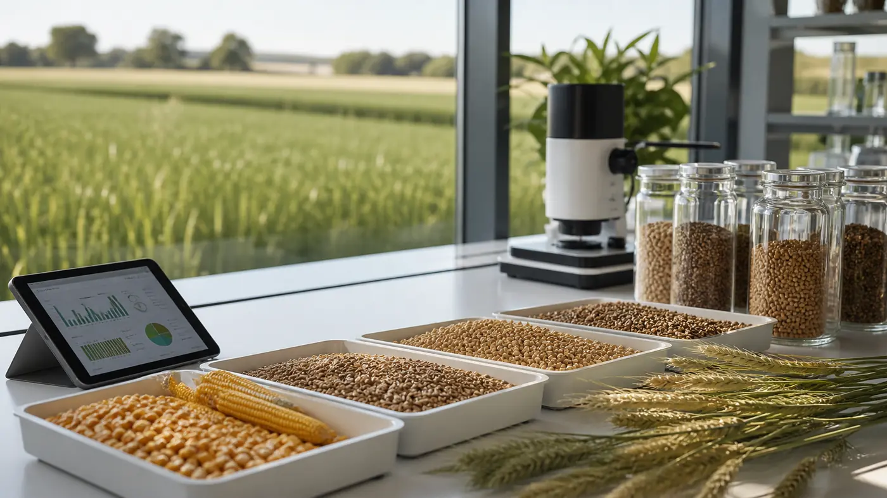
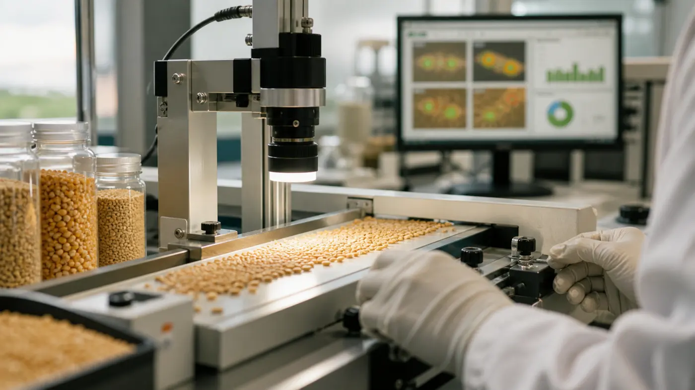
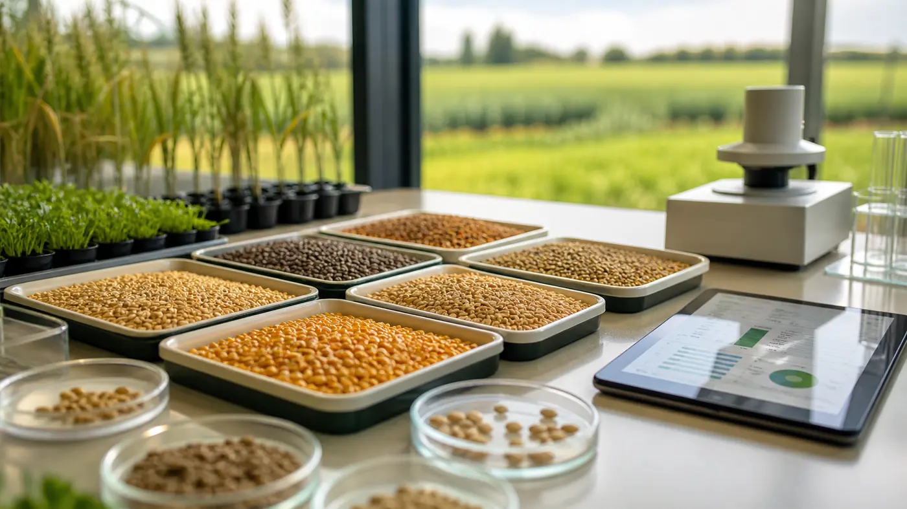
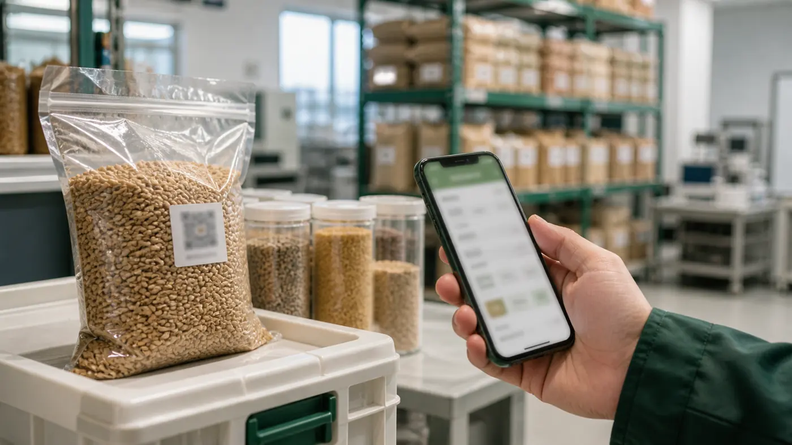
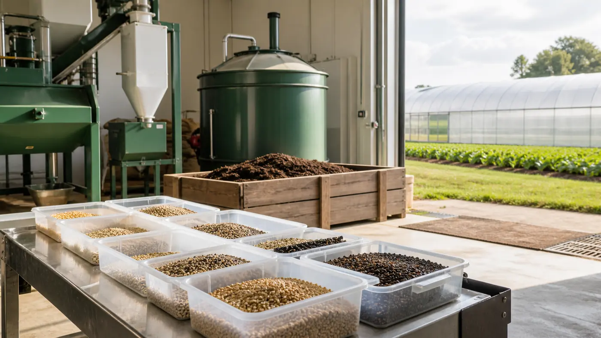

原粮样本采集
采集示例谷物样本，形成标准化检测起点。
Grain Quality Control Platform
围绕样本筛选、视觉识别、风险分级与溯源记录，形成从原粮到应用场景的品质管控闭环。

Process 01
从原粮样本到产业应用，用检测数据反向支持育种筛选与品质迭代。

采集示例谷物样本，形成标准化检测起点。
录入样本类型、批次编号和采样信息，建立批次档案。
识别杂质、破碎粒、颜色异常、霉变风险等视觉特征。
生成综合评分、风险等级和处理建议，输出品质判定。
优质样本纳入候选池，为育种迭代提供数据支撑。
检测结果进入溯源链路，服务品质证明和批次流转。
Process 02
通过批次标识关联样本来源、检测记录、风险分级与流转节点，支撑品质证明和批次管理。

批次溯源码
处理建议：建议人工复核；分级筛选后再进入加工或饲喂链路。
Process 03
基于视觉识别与批次信息，生成包含评分、风险等级与处理建议的品质检测报告。

对原粮样本进行外观特征识别与风险分级。
Process 04
检测不合格批次不直接进入饲料链路，而是进入资源化处理流程，降低安全风险并提升农业副产物利用效率。

识别重度霉变、病害粒、烂粒等高风险样本，前置拦截安全隐患。
风险拦截集中腐熟发酵，将异常谷物转化为可利用的农田有机肥。
资源化处理用于种植饲草、玉米、高粱、牧草，降低长期饲料原料成本。
原料再生产Application
围绕谷物识别、品质检测、批次溯源与资源化处理，覆盖从原粮入库到产业应用的全链路场景。
快速识别破碎粒、颜色异常与杂质风险，辅助售粮前分级。
对入库原料进行抽检与风险分层，减少不合格批次流入。
结合样本表现与检测记录，辅助候选样本筛选与品质迭代。
将检测结果与批次流转节点关联，提升品质证明可信度。
围绕外观、杂质与风险指标，辅助出口前品质把关。
系统围绕谷物样本识别、品质检测、批次溯源和资源化处理，形成从原粮入库到应用场景的品质管控闭环。